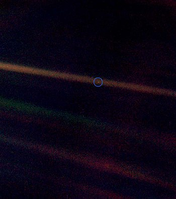

Three million years of intelligent human life on our planet Earth, and we haven't been able
to escape out from the threshold of our Solar System, and our entire home of our universe
in the vast multiverse is still completely beyond our imagination. Many misconceptions, and
mysteries still prevail, and we perhaps have mysteries or unknown ideas of nearly nothing
about our own solar system. Perhaps we are not even able to imagine several ideas that can
lead to new mysteries and curiosities, and this inability has led to us knowing about nothing
about the solar system we can see, leaving alone the universe completely.
The universe is very vast. Distances like the diameter of the solar system (till sun's magnetic
field becomes zero) come in the limit tending to zero when compared to the entire universe.
We, an extended family of humans, matters nothing to the universe we live in. We are too
insignificant, too illiterate with respect to the universe. We know nothing about even the
solar system. Yet, we are improving. We are slowly, but surely, being more and more
knowledgeable. Maybe we can never come in the significant ratio, but our understanding of
our home is increasing. Physics has made a huge advent in our understanding of the
universe, and we can say that we are starting to know the truth, because by now, we have
realized that we humans, once when we called ourselves the knowers of everything, during
the time of classical physics, now have understood with quantum physics that we do not
know anything about how the universe works, this understanding that we are nothing form
something has made us something from nothing, and we move together to explore the
universe.

The image shows our planet Earth from the voyager when it is about to leave the solar
system's magnetic field boundary and move out to the interstellar space. This is where the
solar system, by very general term, ends. This is where all the human population lives
together. For centuries and even now for all world leaders, they individually behave like
they are the center of mass of the universe. Sure, by physics they are, or each and every one
of us are at the center of the universe, since the universe is like an inflated balloon where
the balloon or the universe constantly expands, and every point on the surface of the
balloon shaped universe can be considered as its center, but they are not the center of mass
of the universe. They think they are the major influencers in how the universe works, they
can do anything, but the picture conveys the actual image. After all they, too, live with us in
the nearly invisible tiny dot from the outskirts of the solar system, and the solar system
position is invisible in our galaxy, which is in turn invisible in the universe, which is in turn
invisible in the multiverse. They are at nowhere, by science.
The universe is very big. It will not listen to us at all. It works completely in its own set of
rules, the rules of physics which we have now started to discover. We are too lucky enough
to have got even such a tiny place in this universe. In this tiny place called the Earth, we all
who claim to be intelligent, along with those animals we disregard as to be unintelligent,
where we think we dominate without at all having the idea of our place in the vast
multiverse, and thinking of ourselves as rulers, along with those the rulers consider as
entertainers or subjects, and treats them mercilessly, live together. All parents taking care
of their children, all parents struggling for betterment of their hearth, all teachers nurturing
the futures of this world, all scientists expanding human knowledge and intelligence, all
world leaders murdering their own brothers, all friends helping their friends, all young and
old couples in love, all people taking part in the shaping of this world, all strangers taking
care of each other, all soldiers sacrificing everything they have and even their lives, all
animals down the food chain, all plants making the Earth life sustaining and beautiful, all
trees helping people and not asking for anything in return, all dogs guarding their masters,
all lions eating humans, all bacteria's both killing and curing humans, all seeds looking for a
new life, all the life forms live together, most of them united. We all live together in this
little, insignificant world, the tiny dot in the picture, struggling to survive, to gather
knowledge, and ending the life cycle in the end. It is a small world, after all.